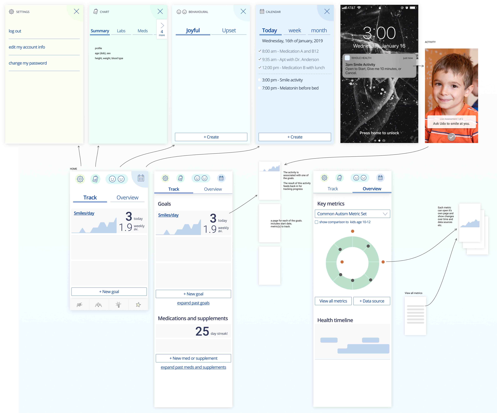
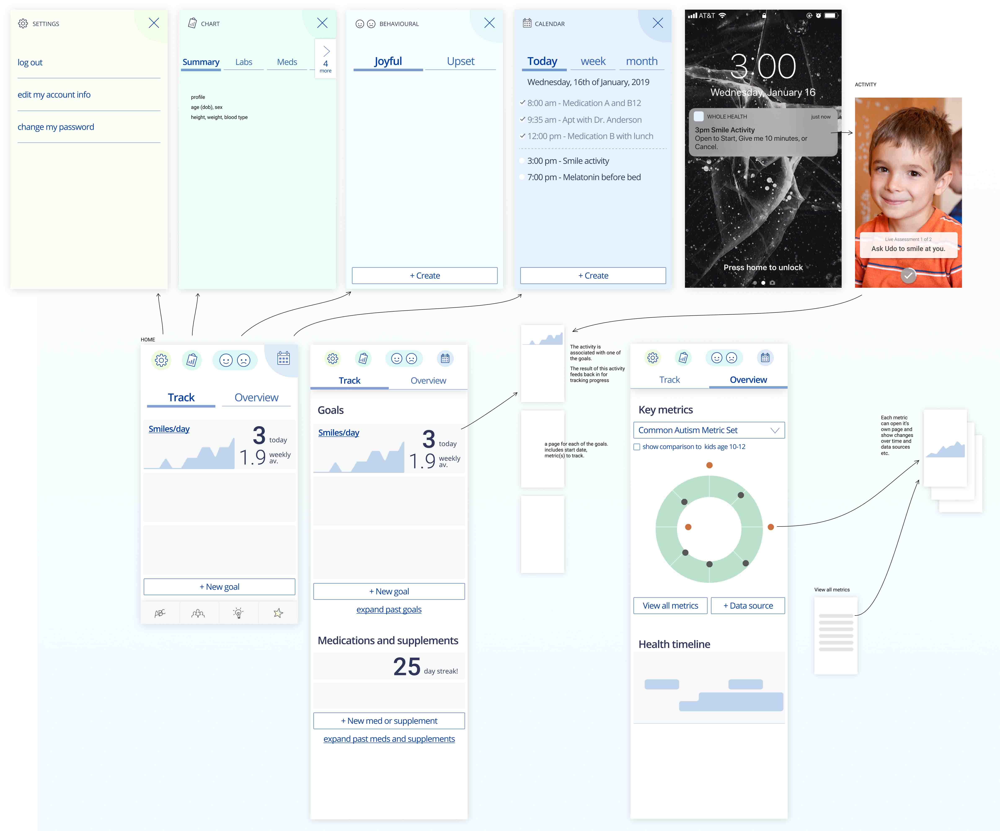

Designs
Sketches, January 2019

Happiness Profile concept, January 2019

Whole Health concept, January 2019
Galaxy concept, January 2019

OpenAutism Health Picture is a beautiful and actionable visual representation of an Autism Spectrum Disorder (ASD) patient's health status, designed to increase awareness of the individual factors that can affect health.
Design an open source “picture” (set of services and visualizations) of an ASD patient… that is accurate, timely, helpful, longitudinal, always-updating, includes life data, and informs patients and their care team of their ever-changing health status, care plan evolution, needed behavior changes, and next steps.
Sketches, January 2019
Happiness Profile concept, January 2019
Whole Health concept, January 2019
Galaxy concept, January 2019